十类情绪角色头像 · 本地预览
29 个角色 × 10 种情绪。第一列「中性」沿用已定稿的 neutral 头像；其余九列为本轮新生成（261/261 张已生成）。每行同一角色，列为同一情绪。点击任意头像打开原图；鼠标停留可看场景动机。
类别定义来自 Astra 标注批次 20260927_a66847a8。场景动机是美术演绎，不新增剧情事实，也不暗示投票或案件真相；纪川为生前形象。
跳转：商鞅变法 · 本能寺之变 · 电车难题 · 凤仪亭之夜 · 码头疑云 · 类别定义 · 提示词 · 生成记录
表情图已程序化缩小为 256×256 无损 WebP（Lanczos）；没有重新生成美术。压缩记录。中性列沿用原始参考图。
| 角色 | 中性 E01 · 沿用 | 笃定／坚定 E02 | 疑虑／警惕 E03 | 困惑／犹疑 E04 | 忧惧／急切 E05 | 愤怒／义愤 E06 | 轻蔑／讥讽 E07 | 悲伤／委屈 E08 | 关爱／温情 E09 | 欣慰／感动 E10 |
|---|---|---|---|---|---|---|---|---|---|---|
| 商鞅变法 | ||||||||||
| 商鞅 | 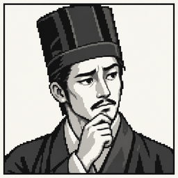 | |||||||||
| 甘龙 | 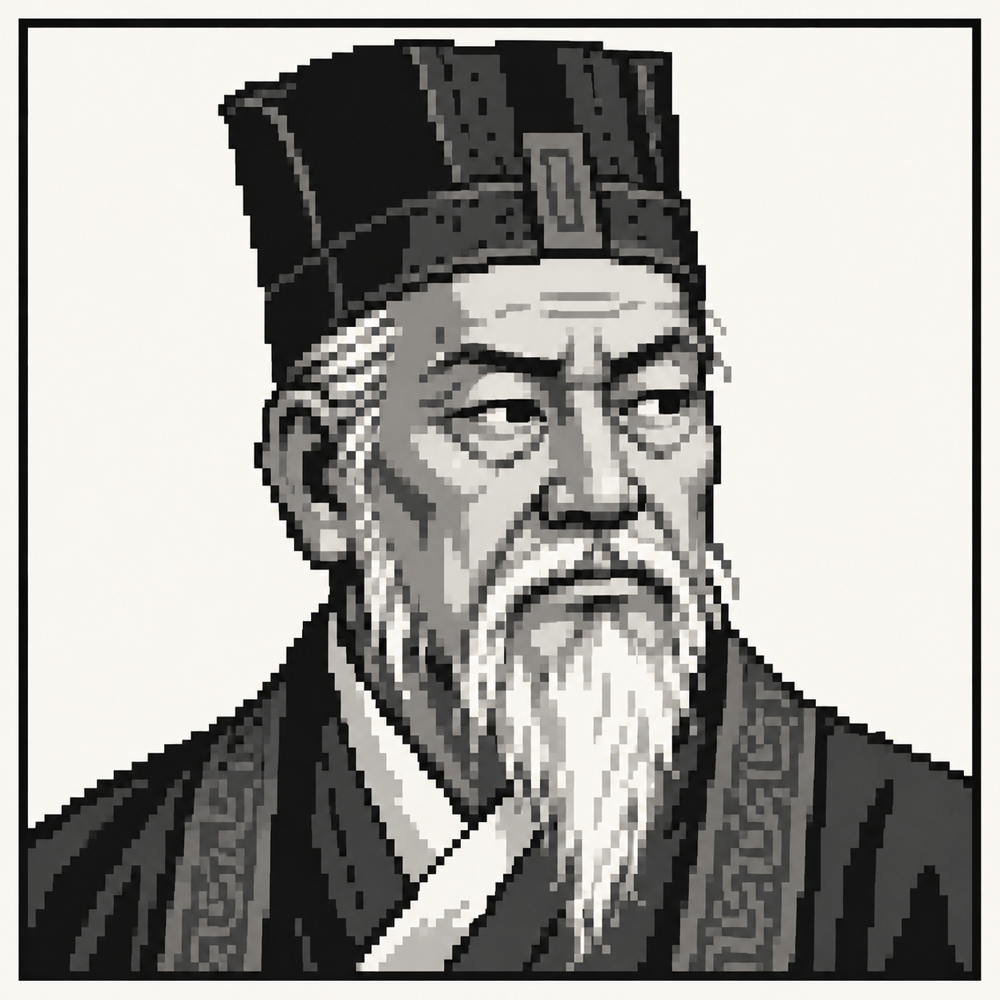 | 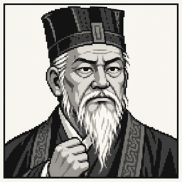 | 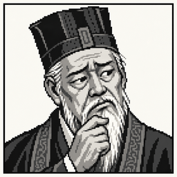 | 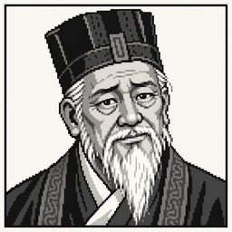 | ||||||
| 秦孝公 | 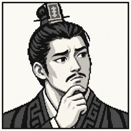 | |||||||||
| 本能寺之变 | ||||||||||
| 长宗我部元亲的密使 | 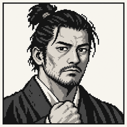 | 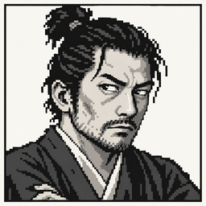 | 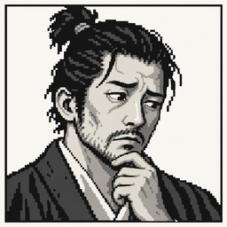 | 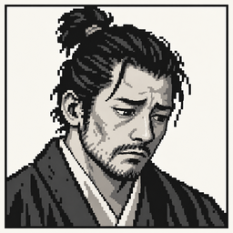 | ||||||
| 足利义昭的使者 | 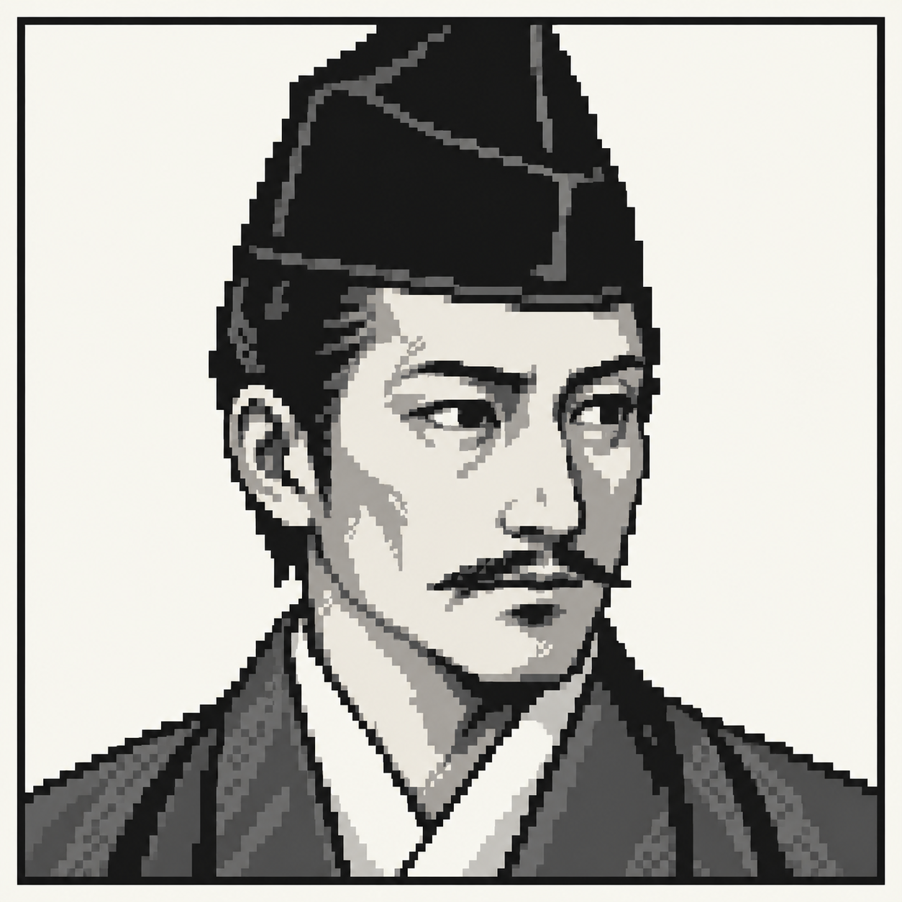 | 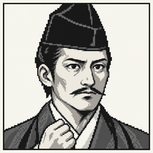 | 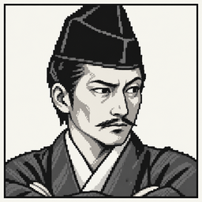 | 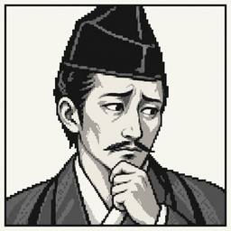 | 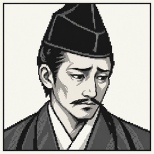 | 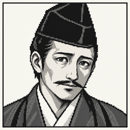 | ||||
| 细川藤孝 | 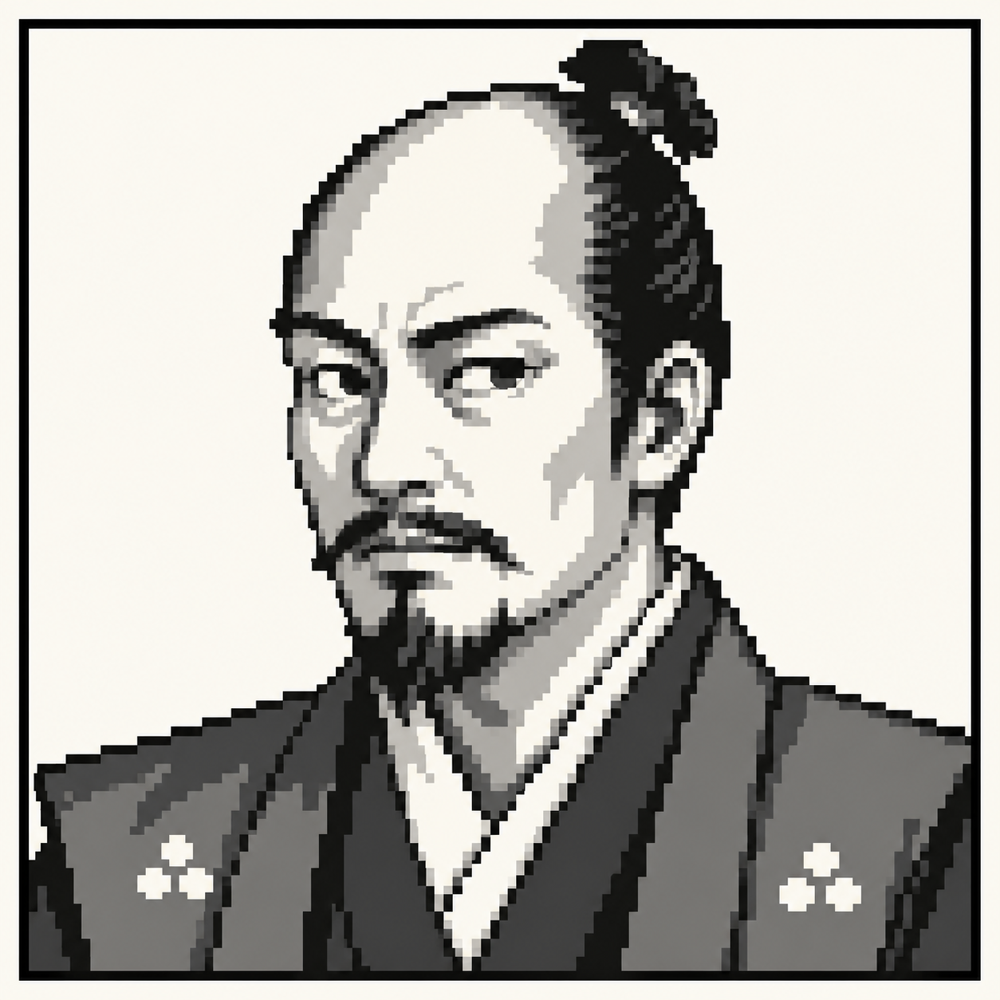 | 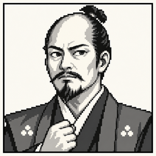 | 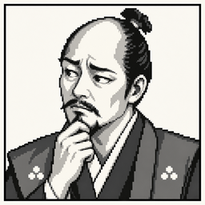 | 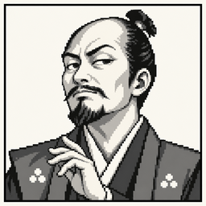 | 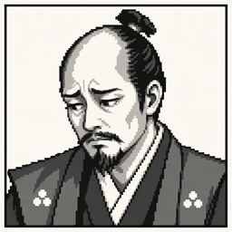 | |||||
| 明智军中的足轻 | 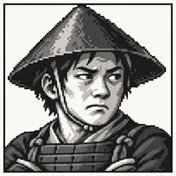 | 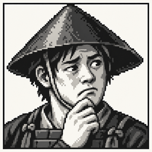 | ||||||||
| 明智光秀 | 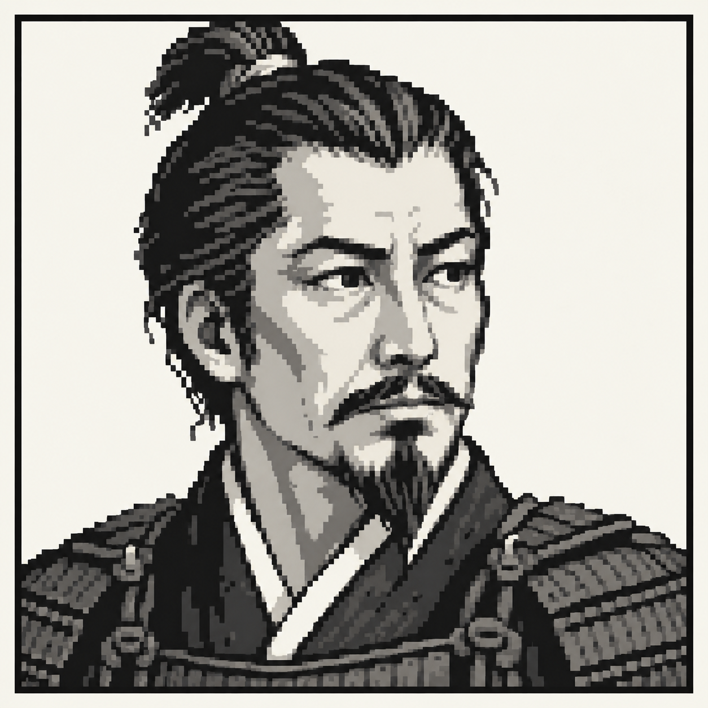 | 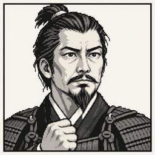 | 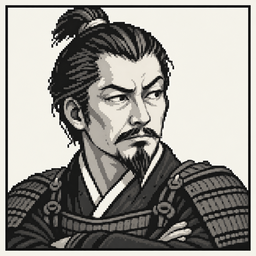 | 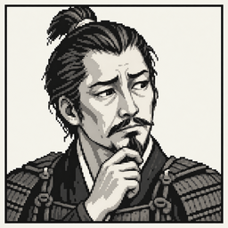 | 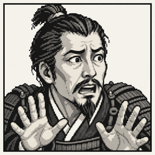 | 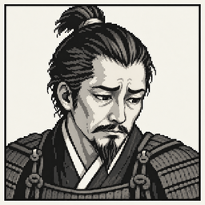 | 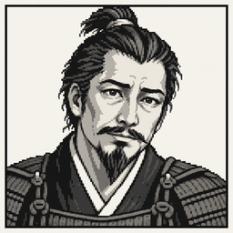 | 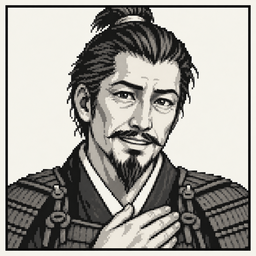 | ||
| 电车难题 | ||||||||||
| 奕仁 | 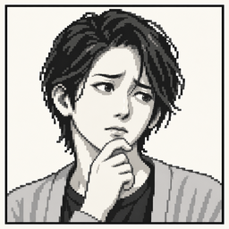 | |||||||||
| 武仁 | 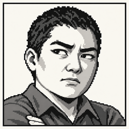 | 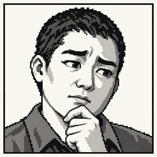 | 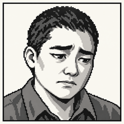 | |||||||
| 明理者 | ||||||||||
| 凤仪亭之夜 | ||||||||||
| 董卓 | 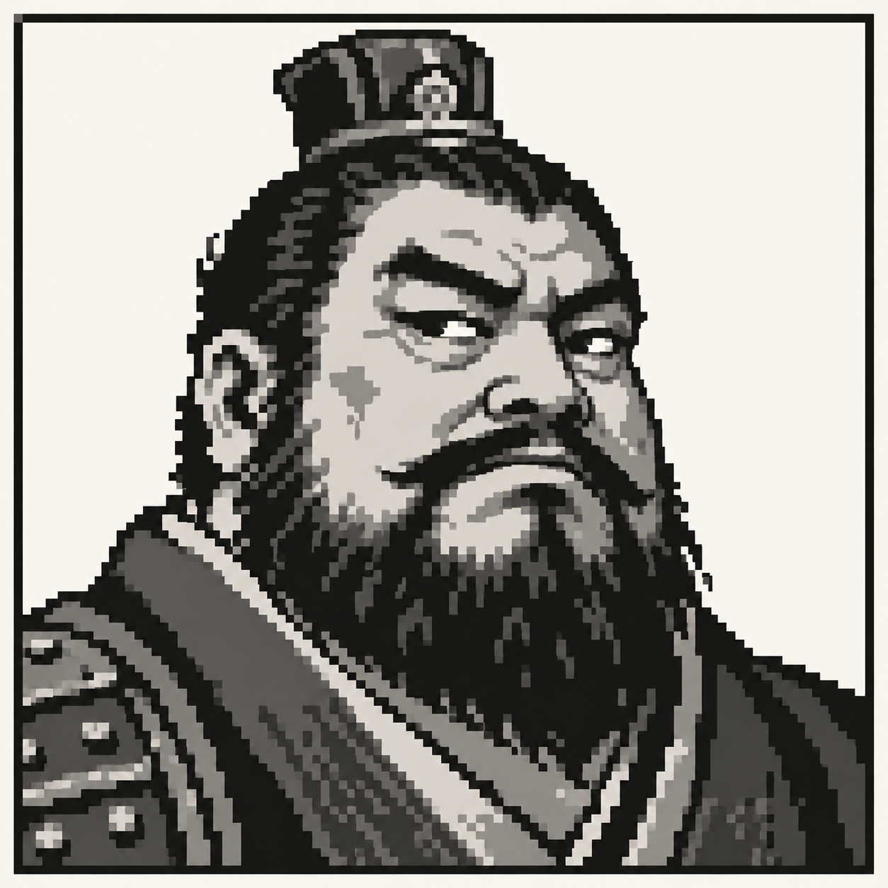 | 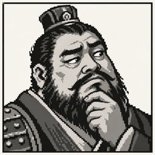 | 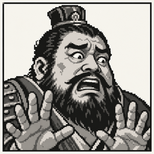 | 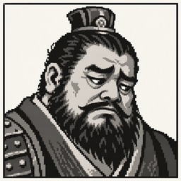 | ||||||
| 吕布 | 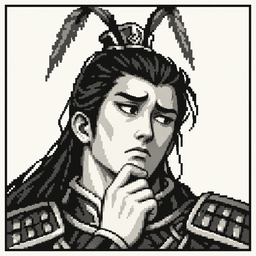 | 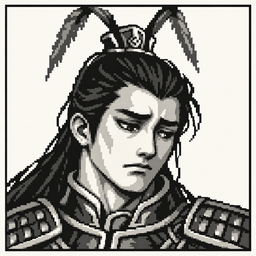 | ||||||||
| 貂蝉 | 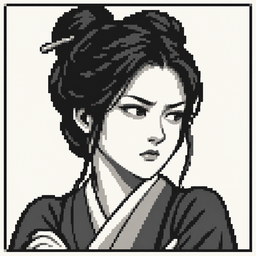 | 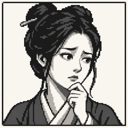 | 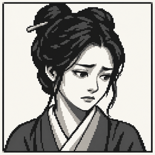 | |||||||
| 细作 | 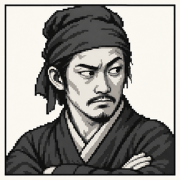 | 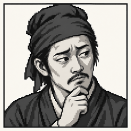 | 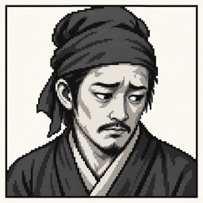 | |||||||
| 董卓旧部 | 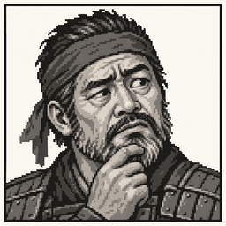 | 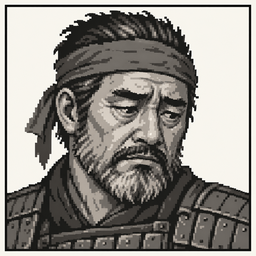 | ||||||||
| 码头疑云 | ||||||||||
| 林 | ||||||||||
| 苏 | ||||||||||
| 陈岚 | ||||||||||
| 魏笙 | ||||||||||
| 韩朔 | 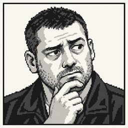 | |||||||||
| 沈青 | ||||||||||
| 杜临 | ||||||||||
| 孟遥 | ||||||||||
| 方稚 | ||||||||||
| 蒋诚 | ||||||||||
| 宁柏 | ||||||||||
| 顾衡 | ||||||||||
| 纪川 | ||||||||||


类别定义
| slug | ID | 类别 | 定义 |
|---|---|---|---|
neutral | E01 | 中性／无明显情绪 | 以描述、推理、归纳或程序说明为主，整条输出没有足以主导的情绪表达；可包含被引述的恐惧、愤怒等他人感受。 |
resolute | E02 | 笃定／坚定 | 呈现有把握、不退让、愿担当或决意行动的心理力量，常以坚决承诺、强调自身确信、明确拒绝动摇或强烈自我申明贯穿全文。 |
wary | E03 | 疑虑／警惕 | 对某人、承诺、说法或推断表现出有方向的不信任、戒备或难以放心，整条输出以追问可信度、防范误导或要求核实来表达这种疑虑。 |
hesitant | E04 | 困惑／犹疑 | 因矛盾信息、内心拉扯或判断难定而呈现迟疑、摇摆、语塞、迷惘，或无法将自己的感受与选择理清。 |
anxious | E05 | 忧惧／急切 | 因可能发生的伤害、失败、失控或失去退路而担忧、害怕、紧张，或在这种威胁感推动下急切求助、催促、劝止。 |
angry | E06 | 愤怒／义愤 | 因受辱、背叛、压迫、不公或伤害而表达恼怒、怨愤、激烈责斥或惩罚性敌意，包含以道德谴责为主要情绪的义愤。 |
scornful | E07 | 轻蔑／讥讽 | 以鄙夷、嘲弄、挖苦或居高临下的贬损表达对人或说法的不屑，重点在揭其可笑、虚伪、无能或不配。 |
sad | E08 | 悲伤／委屈 | 因受伤、被误解、受困、失去尊严或希望受挫而悲凉、心寒、委屈、无奈或消沉，以诉说自身的苦和损失为中心。 |
caring | E09 | 关爱／温情 | 向具体对象表达珍惜、爱意、体谅、陪伴、保护或温柔接纳，以关照对方的感受和自主性为主要情绪。 |
moved | E10 | 欣慰／感动 | 因获得回应、保障、理解或希望而欣喜、感激、被触动或松一口气，呈现负担减轻和愿意重新信任的正向情绪。 |